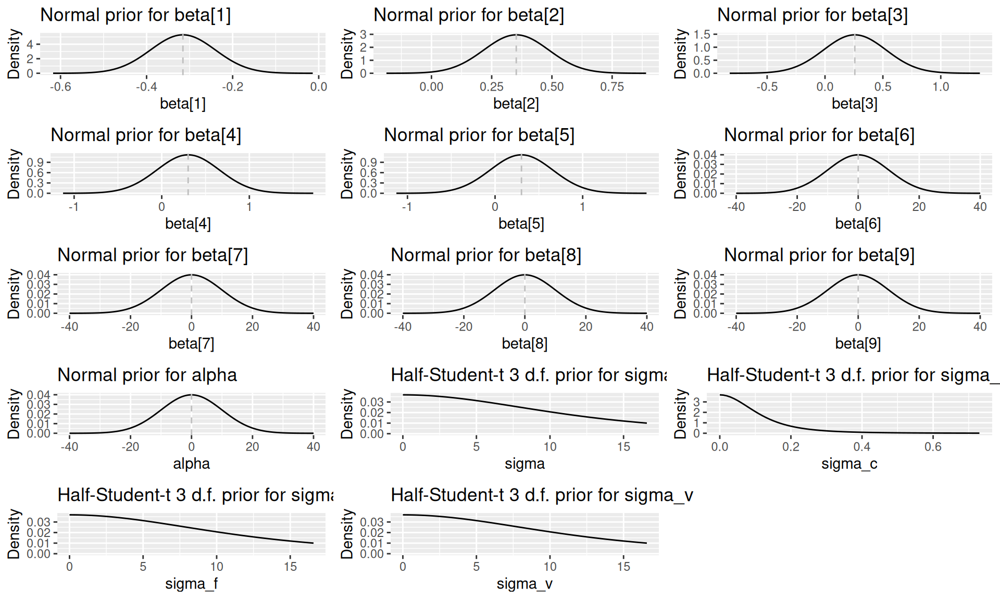
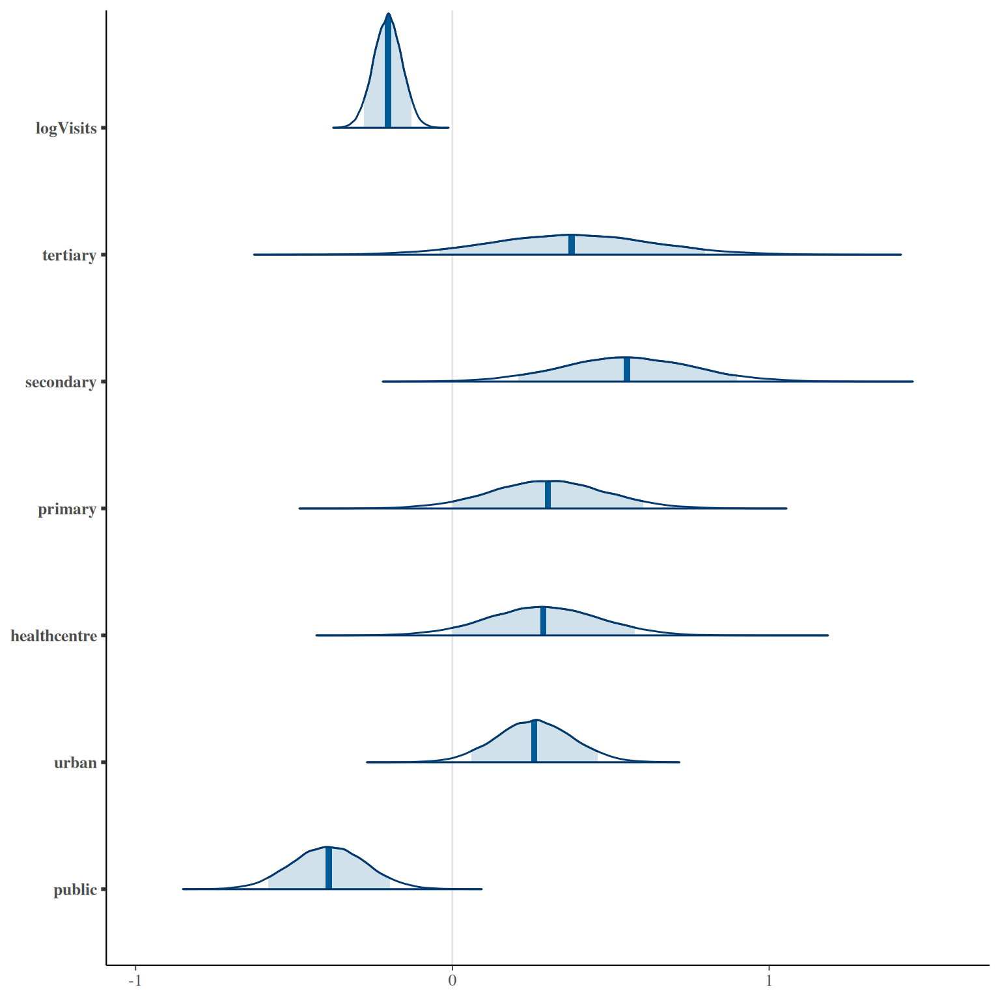
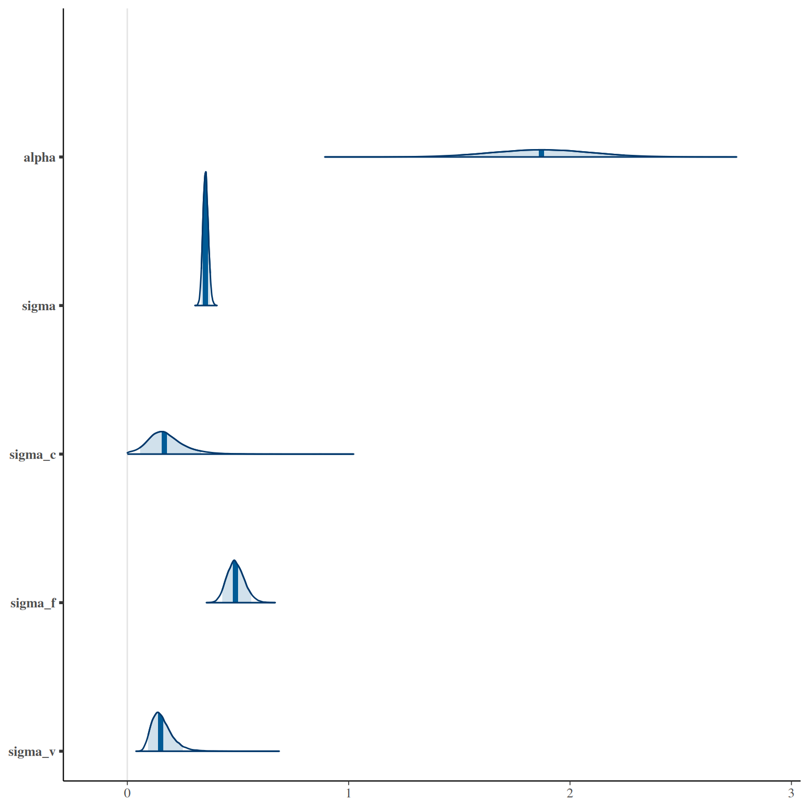
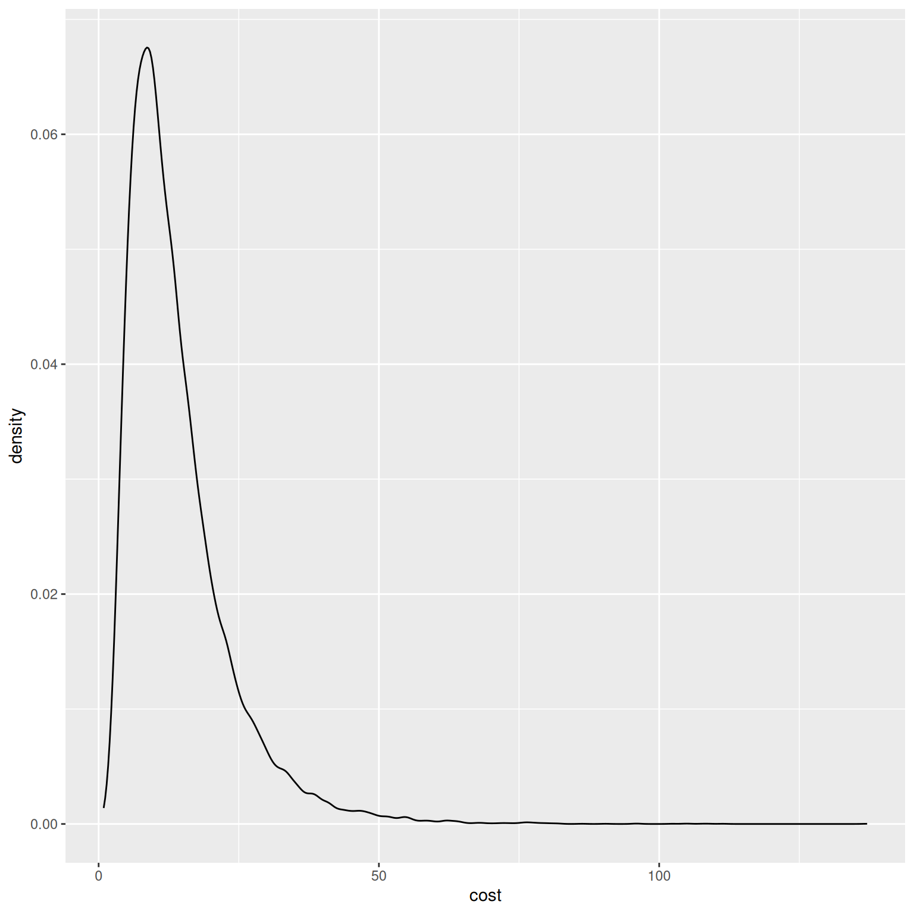

Using the Unit Cost Model
2025-12-11
This package was developed for two reasons: firstly, to make the model development process transparent and reproducible, and secondly, to allow people to make use of the final models to predict TB outpatient visit costs. This vignette speaks to the second of these aims. If you want to use the models to predict costs, this vignette is the only documentation you need to read.
Model structure
The unit cost model is a mixed effects model with country, facility and visit type effects and covariate effects that are assumed shared across countries, facilities and visit types. Log costs are assumed to vary normally:
where is given by:
where represents the value of the jth covariate, the country, the facility, and the visit type of observation . The variables , and account for systematic differences across countries, facilities and visit types, respectively, and are assumed to vary normally about zero:
Model instances are created via the unitcost function:
model <- capturetb::unitcost()
#> Multiple outputs detected. Including output-level random effects in model.
# See model covariates
covariates <- model$covariates()
print(covariates)
#> [1] "public" "urban" "primary"
#> [4] "secondary" "tertiary" "n_services"
#> [7] "log_ID_p_bldgspace" "logVisits" "logVisitsPP_TB"
# See priors used in the model
priors <- model$priors()
print(priors)
#> $prior.alpha.mean
#> [1] 0
#>
#> $prior.alpha.precision
#> [1] 0.01
#>
#> $prior.sigma.scale
#> [1] 10
#>
#> $prior.sigma_c.scale
#> [1] 0.1
#>
#> $prior.sigma_f.scale
#> [1] 10
#>
#> $prior.sigma_v.scale
#> [1] 10
#>
#> $prior.beta.mean
#> [1] -0.3155360 0.3520000 0.2574328 0.3014328 0.3014328 0.0000000 0.0000000
#> [8] 0.0000000 0.0000000
#>
#> $prior.beta.precision
#> [1] 175.85254 55.09843 13.70479 7.84904 7.84904 0.01000 0.01000
#> [8] 0.01000 0.01000
#>
#> attr(,"class")
#> [1] "capturetbpriors" "list"The prior distribution for each model parameter can be visualised by calling plot(priors, parameter = "name_of_param"):
plots <- list()
for(i in 1:9) {
plots[[i]] <- plot(priors, par = paste0("beta[", i, "]"))
}
plots[[10]] <- plot(priors, par = "alpha")
plots[[11]] <- plot(priors, par = "sigma")
plots[[12]] <- plot(priors, par = "sigma_c")
plots[[13]] <- plot(priors, par = "sigma_f")
plots[[14]] <- plot(priors, par = "sigma_v")
do.call(grid.arrange, c(plots, ncol = 3))
#> Warning: Removed 3341 rows containing missing values or values outside the scale range
#> (`geom_line()`).
#> Warning: Removed 4926 rows containing missing values or values outside the scale range
#> (`geom_line()`).
#> Warning: Removed 3341 rows containing missing values or values outside the scale range
#> (`geom_line()`).
#> Removed 3341 rows containing missing values or values outside the scale range
#> (`geom_line()`).
The posterior (fitted) distribution of each parameter can be generated by calling model$plot_posteriors:
model$plot_posteriors(pars = paste0("beta[", 1:length(covariates), "]")) +
scale_y_discrete(labels = covariates)
#> Scale for y is already present.
#> Adding another scale for y, which will replace the existing scale.
model$plot_posteriors(pars = c("alpha", "sigma", "sigma_c", "sigma_f", "sigma_v"))
Training data
The unitcost model is fitted using top-down economic costs in 2018 International Dollars from the ValueTB database. The raw data are installed with the package and include costs for multiple different output types. Output types are also grouped into output groups. Run capturetb::output_groups to see all groups, and capturetb::outputs() to retrieve a complete list of available outputs:
available_output_groups <- capturetb::output_groups()
head(available_output_groups)
#> [1] "OP" "LAB" "RAD" "CS" "IP" "OT"
available_outputs <- capturetb::outputs()
head(available_outputs)
#> [1] "op_diagnosticvisit" "lab_hivconftest" "lab_esr"
#> [4] "lab_rbs" "op_treatmentvisit_ltbi" "lab_cd4count"Subsets of the data can be retrieved using capturetb::get_data(), filtering by output group or output type as needed:
data <- capturetb::get_data(output_group = "OP")
summarised <- data |>
group_by(fc_country) |>
summarise(n_obs = n())
knitr::kable(summarised)| fc_country | n_obs |
|---|---|
| Ethiopia | 148 |
| Georgia | 94 |
| India | 74 |
| Kenya | 111 |
| Philippines | 123 |
The fitted model predicts the cost of a single outpatient visit, given key cost drivers. In the dataset outpatient visits of different types have output group “OP”.
The training data was processed from the raw data by adding one additional variable, n_services, which is the number of distinct TB outpatient services provided at each facility, and by centering all numeric covariates by their sample mean. The training data can be inspected by calling model$training_data():
dat <- model$training_data() |>
select(model$covariates())
head(dat)
#> # A tibble: 6 × 9
#> public urban primary secondary tertiary n_services[,1] log_ID_p_bldgspace[,1]
#> <lgl> <lgl> <lgl> <lgl> <lgl> <dbl> <dbl>
#> 1 FALSE TRUE FALSE FALSE FALSE -1.25 1.31
#> 2 FALSE TRUE FALSE FALSE FALSE -1.25 1.31
#> 3 FALSE TRUE FALSE FALSE FALSE -1.25 1.31
#> 4 FALSE TRUE FALSE FALSE FALSE -1.25 1.31
#> 5 TRUE TRUE FALSE FALSE FALSE 0.745 1.18
#> 6 TRUE TRUE FALSE FALSE FALSE 0.745 1.18
#> # ℹ 2 more variables: logVisits <dbl[,1]>, logVisitsPP_TB <dbl[,1]>Model accuracy
To see how the model performs on the training data:
# Various measures of fit
performance <- model$performance(scale = "natural")
colnames(performance) <- c("MAE",
"RMSE", "95% CI Coverage", "Median CI width", "Bayesian R-squ")
knitr::kable(performance)| MAE | RMSE | 95% CI Coverage | Median CI width | Bayesian R-squ |
|---|---|---|---|---|
| 4.782887 | 6.938667 | 0.9654545 | 23.27268 | 0.4919168 |
and by country:
# Performance by country
country_performance <- model$performance(by_country = TRUE)
colnames(country_performance) <- c("Country", "MAE",
"RMSE", "95% CI Coverage", "Median CI width", "Bayesian R-squ")
knitr::kable(country_performance)| Country | MAE | RMSE | 95% CI Coverage | Median CI width | Bayesian R-squ |
|---|---|---|---|---|---|
| Ethiopia | 5.034131 | 6.804835 | 1.0000000 | 26.30787 | 0.4869124 |
| Georgia | 7.254804 | 10.285288 | 0.9680851 | 40.91699 | 0.4216290 |
| India | 3.251613 | 4.368612 | 0.9459459 | 17.05032 | 0.4545939 |
| Kenya | 4.632344 | 6.944004 | 0.9459459 | 19.62977 | 0.3776126 |
| Philippines | 3.626834 | 4.829250 | 0.9593496 | 19.30543 | 0.5436590 |
By default, performance is reported after marginalising over facility effects. To see the performance of the full conditional model, including known facility effects:
# Various measures of fit
performance <- model$performance(scale = "natural", conditional = TRUE)
colnames(performance) <- c("MAE",
"RMSE", "95% CI Coverage", "Median CI width", "Bayesian R-squ")
knitr::kable(performance)| MAE | RMSE | 95% CI Coverage | Median CI width | Bayesian R-squ |
|---|---|---|---|---|
| 2.632935 | 4.692119 | 0.9618182 | 14.12975 | 0.6593423 |
Visualisiing predictions for inputs in the training data, including credible intervals, against observed costs:
Generating predictions
Predictions of unit cost for new inputs, not in the training set, are generated via the predict method. Note that numeric covariates must be centered; to convert raw values to centered values, use the prepare_covariates utility:
# Include all covariates plus facility country `fc_country` and visit type `output`
new_inputs <- list(
log_ID_p_bldgspace = 1,
logVisits = 6.9,
logVisitsPP_TB = -1.29,
n_services = 1,
primary = FALSE,
secondary = FALSE,
tertiary = FALSE,
urban = FALSE,
public = TRUE,
fc_country = "Ethiopia",
output = "op_treatmentvisit"
)
# This will center covariates as required by the model
covariates <- capturetb::prepare_covariates(raw = new_inputs, mod = model)
pred <- model$predict(covariates,
scale = "natural",
summarised = TRUE,
centrality = c("mean", "median"),
ci = c(0.95, 0.9, 0.8))
# Expected unit cost is mean prediction
expected_unit_cost <- pred$Mean
print(expected_unit_cost)
#> [1] 13.85543 13.85543 13.85543
knitr::kable(pred)| Observation | Median | Mean | CI | CI_low | CI_high |
|---|---|---|---|---|---|
| 1 | 11.55728 | 13.85543 | 0.95 | 3.532986 | 37.64690 |
| 1 | 11.55728 | 13.85543 | 0.90 | 4.267347 | 31.06315 |
| 1 | 11.55728 | 13.85543 | 0.80 | 5.337592 | 25.00999 |
Note that by default the 95% predictive interval is returned. If you instead want the 95% credible interval of the mean, pass ci_type = "mean".
To see the full distribution of predicted costs:
pred <- model$predict(covariates, scale = "natural", summarised = FALSE)
ggplot2::ggplot(data.frame(cost = pred), ggplot2::aes(x = cost)) + ggplot2::geom_density()